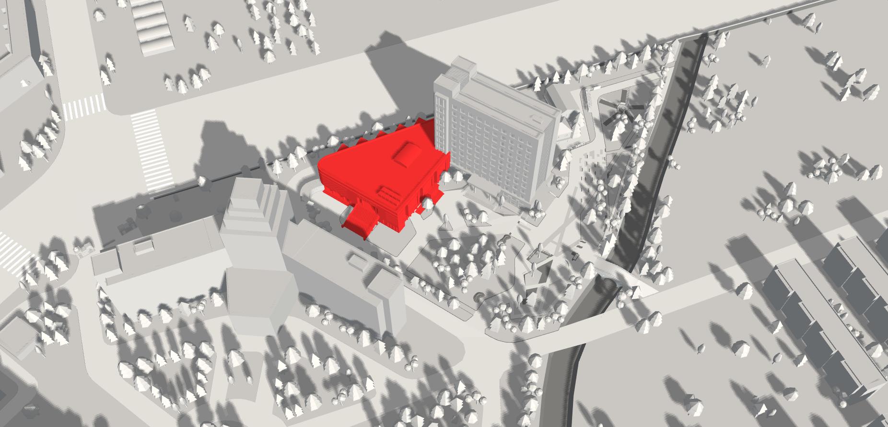

回到主页
东北林业大学携手社会各界建设“中国（哈尔滨）森林博物馆”,以林型（种群、群落和生态系统）作为馆藏基石,承载原始森林、近现代森林和森林文化与生态文明所积淀的厚重内涵，从森林与自然界、森林与人类两大方向诠释人类社会与生态环境关系，全面展现林业发展历史，凝练森林文化内涵，传承行业精神，彰显生态文明，耦合社会经济,长效发挥“收藏与积淀、教育与研究、展示与交流、文明与进步”的功能，成为我国森林文化的新地标、生态文明的新窗口、一个可以影响未来的新起点。
